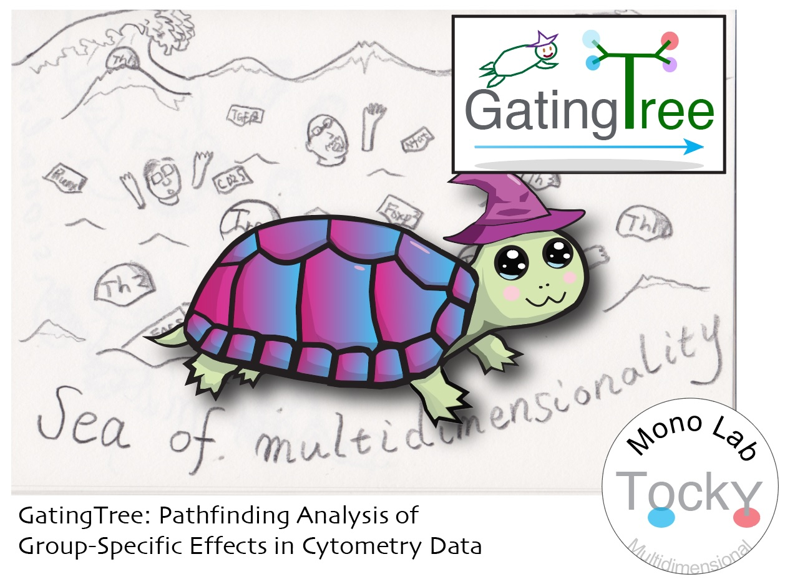

Table of Contents
1. Introduction
GatingTree is an R package designed to enhance the analysis of group-specific effects in cytometry data.
Current Challenges
Advancements in cytometry technologies allow for the simultaneous analysis of numerous markers. However, they also introduce challenges in the data-oriented analysis of biological effects, such as treatment effects, within high-dimensional data.
Traditional methods such as manual gating are insufficient for these demands. While dimensional reduction methods (e.g., UMAP) with or without clustering are increasingly common, they struggle with reproducibility across experiments. Moreover, the cell clusters they identify may not translate effectively into practical gating strategies for laboratory use, further exacerbating the reproducibility crisis in biological and medical research.
Solutions GatingTree Offers
GatingTree offers a distinct approach by not relying on dimensional reduction. Instead, it explores the multidimensional marker space through pathfinding analysis to pinpoint group-specific features. By deliberately avoiding multidimensional analyses such as PCA and UMAP, as well as clustering algorithms, GatingTree provides straightforward solutions that can be directly applied in downstream applications such as flow cytometric sorting of target populations.

2. Installation
To install GatingTree, first ensure that you have the devtools package installed:
install.packages("devtools")Then, install GatingTree from GitHub:
library(devtools)
install_github("MonoTockyLab/GatingTree", dependencies = TRUE)3. Vignettes
The GatingTree package includes vignettes to assist users in efficiently applying GatingTree to cytometry data.
Basic Workflow: This vignette provides users with a step-by-step guide to processing and transforming data, applying GatingTree analysis, and visualizing results.
DefineNegatives: This vignette demonstrates how the function
DefineNegativescan be used to determine positive/negative thresholds for markers, which is a critical preprocessing step for GatingTree analysis.Using CSV File Inputs: This vignette shows how to import cytometry sample data as CSV files and initialize a
FlowObject.
Note: You can access the vignettes within R using the browseVignettes("GatingTree") command after installing the package.
4. Package Documentation
The GatingTree package documentation is available online:
This site includes all the function reference manuals and vignettes (tutorials).
In addition to the HTML manual pages, a PDF manual for the GatingTree package is available. You can find it in the installed package directory under doc/, or you can access it directly from GitHub.
5. Copyright, License, and Citation Guidelines
Copyright
All code and original graphical content within the GatingTree package, including anime-like characters and logos, are copyrighted by Masahiro Ono.
License
The distribution and modification are governed by the Apache License 2.0, which ensures that all users have the freedom to use and change the software in a way that respects the original authorship. See the LICENSE file for more information.
Citing GatingTree
If you use GatingTree in your research, please cite:
Masahiro Ono (2024). GatingTree: Pathfinding Analysis of Group-Specific Effects in Cytometry Data. arXiv:2411.00129 [q-bio.QM]. Available at:https://arxiv.org/abs/2411.00129.
Why Citation Is Important
Citing software you’ve used is crucial for acknowledging contributions and ensuring reproducibility, which are critical for scientific progress.
- Giving credit to the developers and researchers who have contributed to the tools you utilize respects and acknowledges their intellectual contributions.
- Proper citations allow other researchers to access the same tools and versions, thus replicating and verifying your scientific results.
Citations are integral to the scientific ecosystem; they help trace the evolution of ideas and enable others to build upon existing research.
We kindly remind our users that citing software is as important as citing academic articles in maintaining the integrity of the scientific record.
Further Resources
For additional guidance on citation practices and maintaining research integrity, we recommend visiting the Committee on Publication Ethics (COPE), which offers valuable resources and support for adhering to ethical practices in scholarly publishing.
6. The Ono Lab (MonoTockyLab)
The Masahiro Ono Lab (MonoTockyLab) offers innovative approaches to analyzing omics and flow cytometric data. The lab is particularly well-known for their development of Timer-of-cell-kinetics-and-Activity (Tocky) and integrated analysis of immunological data using both experiments and computational analysis.
Principal Investigator: Dr. Masahiro Ono, Reader in Immunology at Imperial College London.
Dr. Ono is the creator and developer of Tocky. He innovated the transgenic and computational technologies that constitute Tocky.
In 2008, Dr. Ono initiated his pioneering transition from molecular immunology to becoming an Integrated Experimental and Computational Immunologist, demonstrating his visionary leadership and pioneering spirit in the development and application of multidimensional analysis and computational methods to address experimental and immunological problems. Tocky represents one of the fusion technologies that Dr. Ono has both created and developed.
Tocky employs the Fluorescent Timer protein to analyze the temporal dynamics of cell activities and development in vivo. His lab integrates molecular biology, immunology, and computational analysis to develop novel research tools, thereby enhancing the understanding of immune cell biology.
7. Contact and More
Email: 
Personal Homepage:
GitHub: 
Twitter: 
BlueSky: 
Professional Homepage: Imperial College London - Masahiro Ono